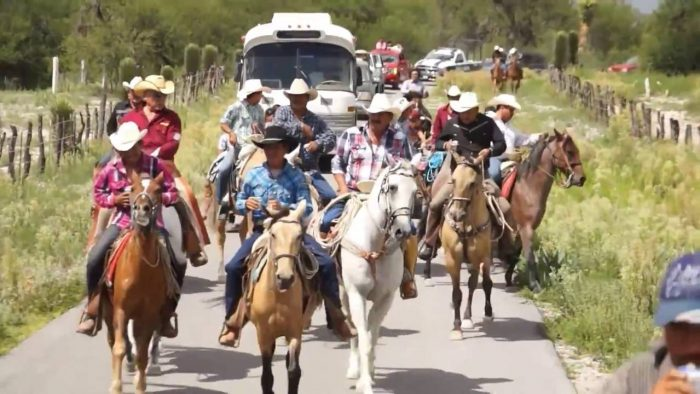
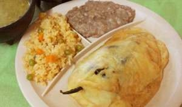

ORIGEN
Doctor Arroyo es un municipio del estado de Nuevo León, México. Su territorio es
de 5.106,2 kilómetros cuadrados. El nombre se da en honor al Dr. José Francisco
Arroyo Villagómez, miembro del comité que aprobó la creación del Valle Purísima
Concepción. La ciudad fue fundada el 22 de septiembre de 1826.
Su población
actual es de 37.645 habitantes. El 31 de diciembre 1877 recibió una descarga de
la ciudad. La fiesta de su fundación tiene lugar el 22 de septiembre. Su fiesta
patronal tiene lugar el 8 de diciembre en honor a "La Purísima Concepción".
Durante 45 días en 1915 disfrutó de la condición de sede del poder del Estado ya
que el General Eulerio Gutiérrez Ortiz era el presidente constitucional de México.
Editor: Raúl Gutiérrez Camacho
Bibliografia
TURISMO EN DR. ARROYO

Esta increíble ciudad se caracteriza por sus
enormes cabalgatas, de hecho, alberga de
las más grandes del estado, y si buscas en internet puedes ver el ambiente en
estas fiestas.
Todos los domingos hay una fiesta multicultural en la plaza principal donde se
venden algunas artesanías locales, pues en Dr. Arroyo se destacan por su
habilidad para la arcilla y las mejores ollas se obtienen de allí y muchas personas
salen y las venden a lo largo del país.
Para los entusiastas de la caza, el Dr. Arroyo tiene el Club Cinegético, donde
oficialmente puedes practicar este deporte y tienes todo lo necesario para hacerlo
de forma legal.
Editor: Raúl Gutiérrez Camacho
Bibliografia
GASTRONOMIA
ASADO DE PUERCO
Carne de puerco sazonada con chile rojo y especies.
Se acompaña con arroz y ricos frijoles.
Ingredientes:
● 1 kg. De carne de puerco
● 250 g. de chile Colorado
● unas hojas de laurel
● 2 dientes de ajo
● manteca la necesaria
● sal al gusto
Se corta la carne en cubitos y se fríe bien
dorada,
mientras se tuesta el chile en una plancha
ligeramente evitando que se queme,
se cuece y se licua con el ajo y sal, cuando la
carne este doradita se le agrega sal,
el chile Colorado y las hojas de laurel, se deja
hervir y se rectifica la sal.
Se puede servir con arroz blanco, rojo o frijoles
refritos.

CHILE RELLENO DE PICADILLO O QUESO
Chile poblano relleno de carne de res sazonada o si lo prefieres con mezcla de
quesos. Se acompaña con frijoles y arroz.
Ingredientes:
• 4 chiles Poblanos
• 2 huevos
• 300 g. de Queso
• Harina
Aceite
Los chiles se asan se les quita la piel, las semillas y las venas.
En seguida se enjuagan con agua con sal.
Los chiles se rellenan con el queso y se cierran con la ayuda de un palillo,
En seguida todo el chile se espolvorean de harina.
Se baten las claras de huevo a punto de turrón y después
se agregan las yemas y se sigue batiendo.
Se pone el aceite a calentar en una cacerola,
los chiles enharinados se pasan por el huevo y después se ponen a freír,
volteándolos para que se frían de los dos lados
Se sirven con salsa de jitomate y arroz blanco.
Editor: Raúl Gutiérrez Camacho
Bibliografia